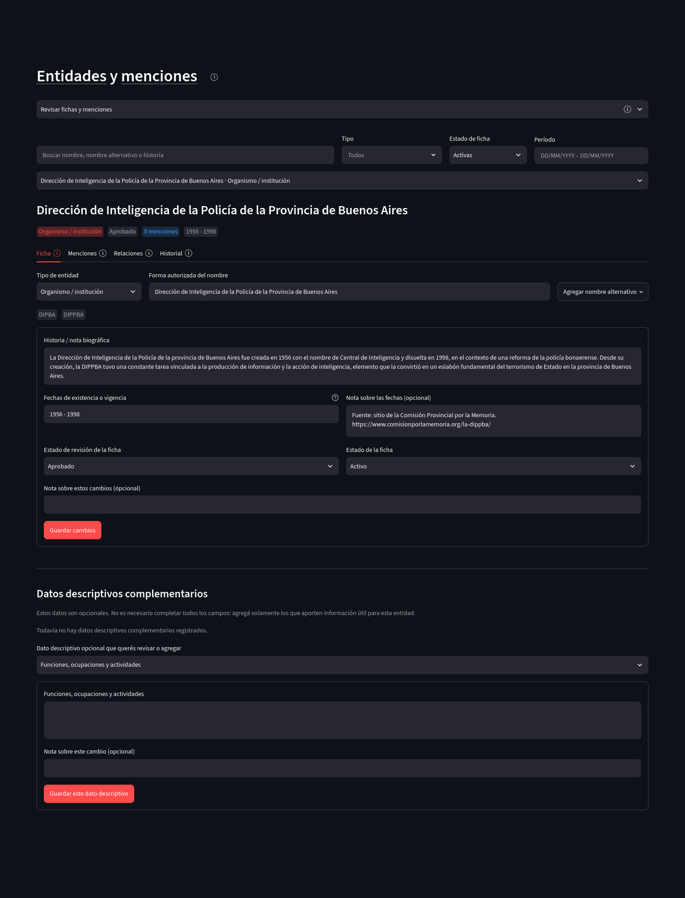
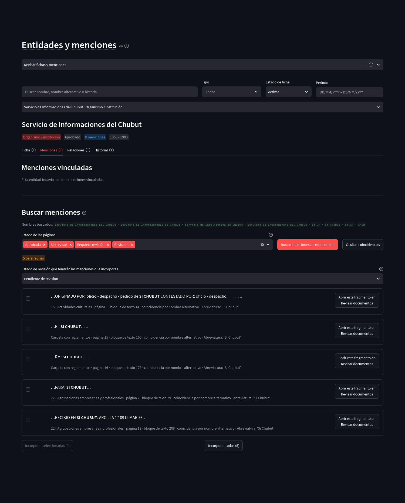
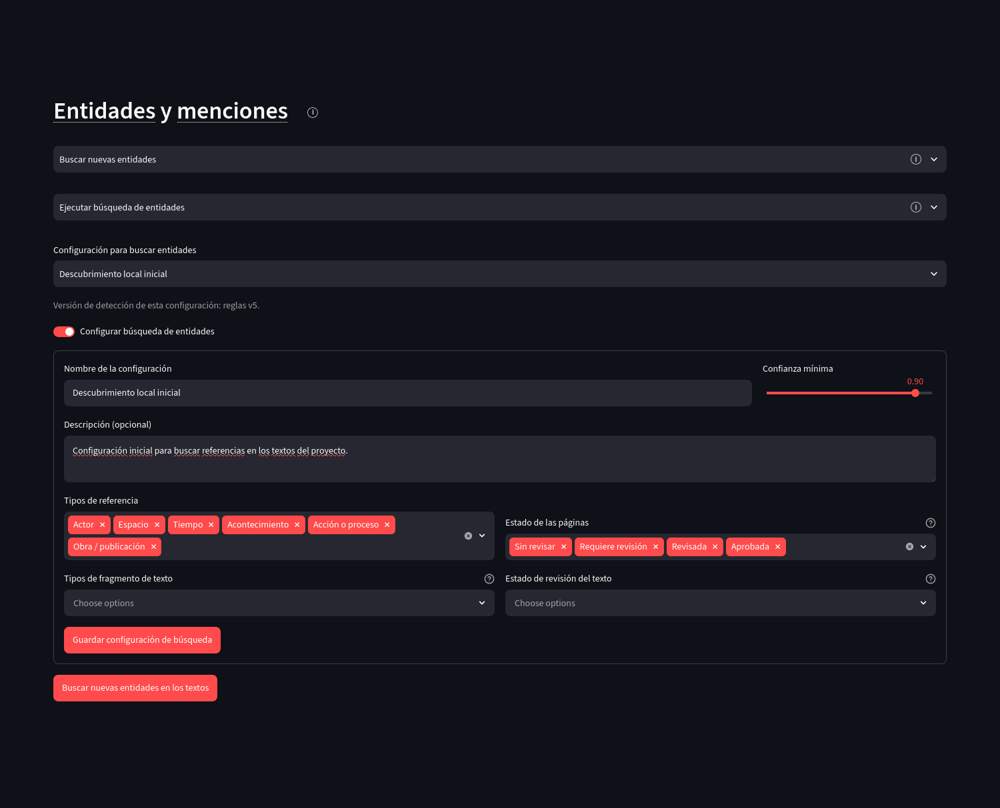
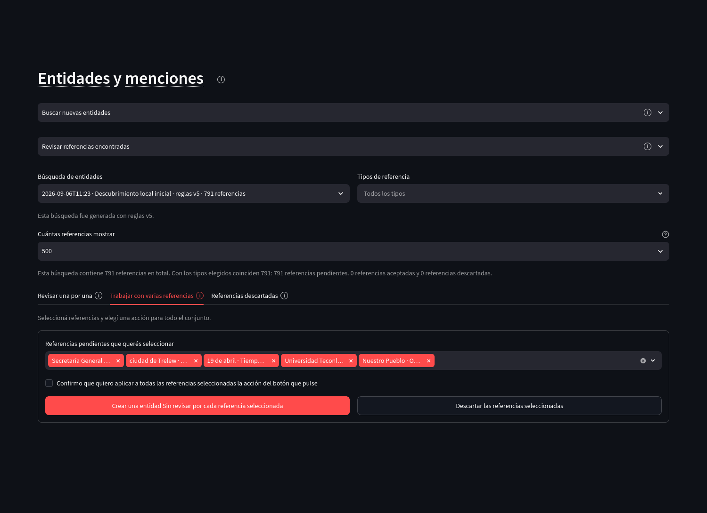

Exploración y descripción
Entidades y menciones
Una entidad es un referente reutilizable del proyecto, como una persona, una organización, un lugar, un acontecimiento o una obra. Una mención es una aparición concreta de ese referente en un fragmento de texto. La ficha de la entidad y sus menciones se conservan separadas para que una misma entidad pueda reunir evidencia distribuida en muchos documentos.
Ficha de entidad
La ficha contiene el tipo de entidad, la forma autorizada del nombre, nombres alternativos, historia o nota biográfica, período de existencia o vigencia, estado de revisión y datos descriptivos opcionales.
{kind=link}

Abrir captura completa
Menciones
La pestaña Menciones muestra las menciones ya vinculadas y permite buscar nuevas apariciones a partir del nombre autorizado y los nombres alternativos.
{kind=link}

Abrir captura completa
Relaciones
Las relaciones de una entidad pueden incluir roles archivísticos y relaciones analíticas. Una relación analítica identifica origen, destino, nombre de la relación, contexto, período, evidencia, procedencia y estado de revisión cuando esos datos están disponibles.
Historial
Las modificaciones de una ficha se registran como revisiones. El historial permite consultar estados anteriores y operaciones como creación, cambio de campos o agregado de nombres alternativos.
Creación de una ficha
La creación manual solicita tipo de entidad, forma autorizada, historia opcional, período de existencia o vigencia y estado de revisión.
Importación y exportación de fichas
Las fichas de entidades y relaciones pueden descargarse como JSON editable fuera de la aplicación. Una importación se simula antes de guardar para distinguir registros nuevos, reutilizados y actualizados.
Búsqueda de nuevas entidades
La búsqueda automática de referencias utiliza una configuración que delimita tipos de referencia, confianza mínima, estados de página y estados del texto. Ejecutar la búsqueda crea posibles referencias pendientes; no crea automáticamente fichas aprobadas.
{kind=link}

Abrir captura completa
Revisión individual
Cada posible referencia muestra el fragmento, su contexto y la procedencia documental. La decisión puede aceptar la referencia, vincularla con una entidad existente, crear una entidad nueva o descartarla, según las opciones disponibles.
Revisión de varias referencias
La revisión múltiple aplica una misma decisión a un conjunto seleccionado después de una confirmación explícita.
{kind=link}

Abrir captura completa
Referencias descartadas
Descartar una referencia no borra su historial. La pestaña Referencias descartadas muestra el fundamento registrado y permite restaurarla para revisar nuevamente.
Duplicados y cambios de texto
Revisar posibles referencias repetidas agrupa referencias que podrían corresponder al mismo referente. El grupo se inspecciona antes de separar una referencia o construir un grupo manual.
Actualizar referencias después de corregir el texto reúne referencias cuya ubicación textual necesita revisarse después de una modificación del bloque de origen. Si no existen casos, la pestaña lo informa sin requerir ninguna acción.